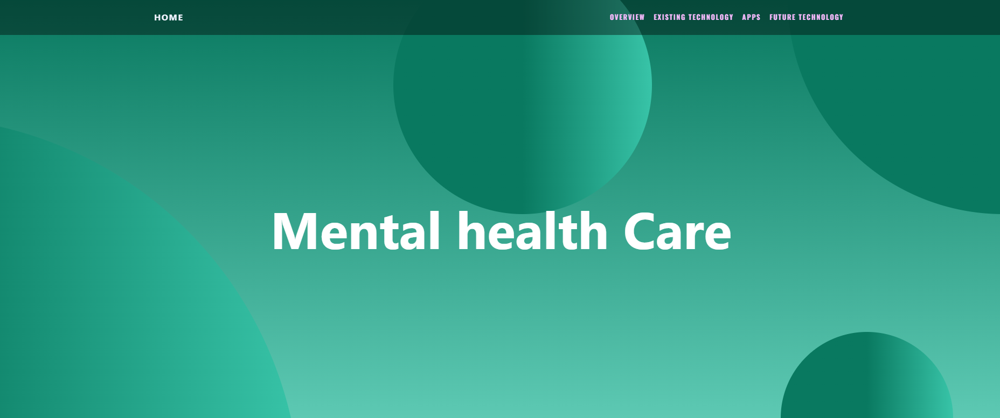

SEP10 Freedom Project
Context
I am a student at HSTAT in the Software Engineering Program. The "Freedom Project" for SEP10 is a year-long project all about making a website that informs the viewer of the current and future innovations in the topic of my choosing.
For my project, I chose the topic of Mental Health Care.
I used HTML, CSS, Bootstrap, and Github. I also chose to independently study mental health treatment in order to help me make by website.
Process
There were many steps I had to take to complete my SEP10 freedomproject.
- I did research on my topic by reading websites such as Apa.org, Forbes.com, and copperdigital.com.
- My SEP10 teacher, Mr Mueller, gave us a list of tools to choose from and I chose a tool called Aframe.
- I tinkered with my tool and wrote down what everything I did in my “learning log” on github
- I created a layout of my website by making two wireframes: One for mobile and one for desktop.
- I created a minimum viable product (MVP) with the heading, overview, part A (existing technology), and part B (future technology).
- I used bootstrap to make my website responsive to different screen sizes
- Go beyond a MVP by adding colors and fonts (CSS)
While completing this project I wrote down my progress in a blog on github.
Challenge
One challenge I had while completing this project was procrastination. There were many times where I would procrastinate because I would get discouraged or overwhelmed after overestimating the amount of work I have to do.
Overcoming this challenge
To overcome my procrastination I broke down the task into smaller steps. Breaking down one big task into many smaller tasks would make the work more manageable and less overwhelming. To do this I created a plan:
- Research the existing technology and brainstorm possible innovations and technology in mental health care
- Write down all the content in a google doc
- Create a layout of the website
- Make header and overview
- Make carousel/slideshow for part A
- Create the “simulations” section (Part A)
- Create “existing apps” section (Part A)
- Create future technology section (Part B)
- Create Aframe (Part B)
- Use bootstrap to make the website responsive
- Decorate and add colors to the website (CSS)
Then I followed these steps to complete my website.
Takeaways
There were many things I learned from creating this website. Two takeaways I had from completing the “Freedom Project” is to manage your time to complete tasks efficiently, and be organized.
- Organization
- - Having organization made this project way easier for me to complete. If I didn’t write down my ideas or make a plan finishing this project would have been way more difficult.
- Time management
- - Outside of school, I have a lot of tasks I need to complete such as picking up my sibling from school, chores, and homework. So I planned ahead and created a schedule to help me find time to finish this project.
Next Steps
Moving forward I plan to use everything I learned from this SEP10 “Freedom Project” to complete my future assignments and tasks.
Links to my project
